Linux Max

Bienvenido/a
Bienvenido/a al módulo de Linux Max.

Introducción
Linux Max el sistema operativo de La Consejería de Educación y Empleo de la Comunidad de Madrid (EDUCAMADRID), especialmente adaptado para su uso en entornos educativos, por su sencillez, robustez y la recopilación de software que incluye.
Linux Max ofrece diversas opciones según se vaya a emplear de modo personal o en un entorno educativo como sistema de profesor o de alumno; personalizable, además, para su uso en Educación Infantil y Primaria.

GNU/LINUX
GNU/Linux es un sistema operativo que, al igual que cualquier otro (como puede ser Windows o Solaris), brinda operatividad sobre una computadora. Un sistema informático está constituido en forma tripartita por los recursos de hardware, los recursos de software y los usuarios, siendo cada una de sus partes tan importante como las otras dos.
Caracteristicas de GNU/LINUX
- Multiprocesador: Linux soporta el trabajo con más de un microprocesador en plataformas Intel y SPARC.
- Memoria: En Linux la memoria funciona en modo protegido, de esta forma un mal funcionamiento en la ejecución de un programa no puede colgar el sistema completo.
- Disponibilidad: Todos los archivos de código fuente del núcleo, herramientas de desarrollo, drivers y todos los programas de archivos fuente de usuario están disponibles para ser modificados y redistribuidos con total libertad.
- Escritura: Es implementada una política de copia en escritura para la compartición de páginas entre ejecutables.

Distribuciones GNU/LINUX
- Blag.
- Dragora.
- Dynebolic.
- Guix.
- gNewSense.
- Musix.
- Parabola.
- Trisquel.
- Ututo XS.
Distribuciones GNU/LINUX


Partes del escritorio
- Menú principal.
- Barra inicio rápido.
- Barra de tareas.
- Accesos directos.
- Área de trabajo.
- Área de notificaciones.
Partes del esritorio
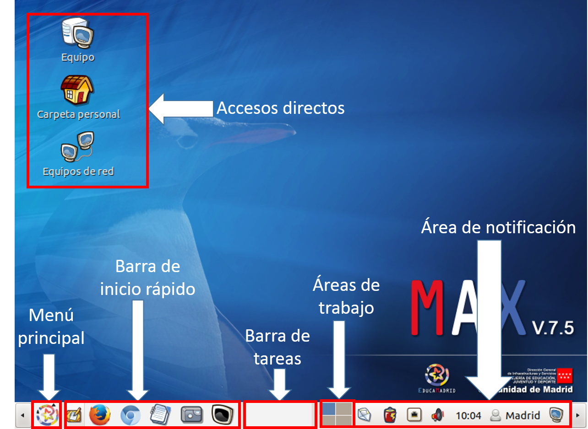


Apariencia del escritorio
- Clic en el icono de pantalla.
- Seleccionar Configuración de sistema.
- Clic en Apariencia.
- Seleccionar el Fondo de escritorio.
- Cerrar.
Apariencia del escritorio


Menú principal de Linux Max
Suele estar en la parte baja izquierda del escritorio y que al hacer clic sobre este, despliega visualmente todos los programas que tenemos instalados en nuestro ordenador.
Menú principal de Linux Max
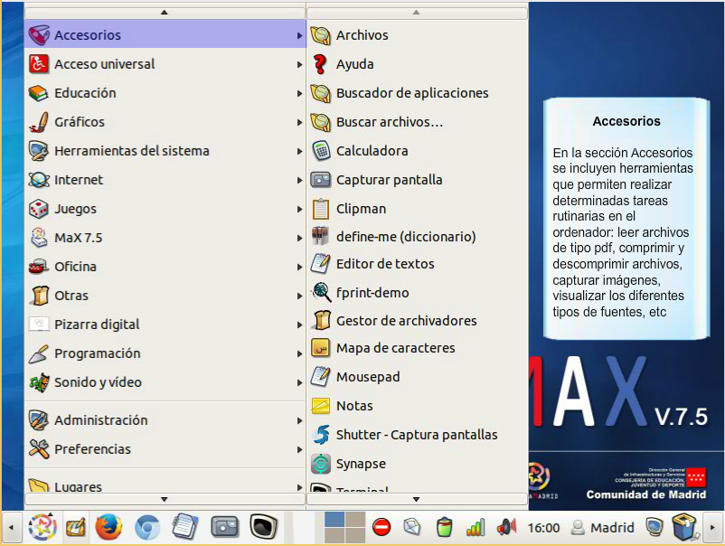
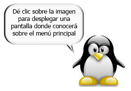

Configuración de sistema
La configuración de sistema se divide en tres partes y cada una de ellas se subdivide, entre estas configuraciones se encuentra:
- Personal.
- Hardware.
- Sistema.
Configuración de sistema


Sistema de archivos
Un sistema de archivos son los métodos y estructuras de datos que un sistema operativo utiliza para seguir la pista de los archivos de un disco o partición; es decir, es la manera en la que se organizan los archivos en el disco.
Sistema de archivos


Copiar
- Seleccionar el Archivo.
- Clic izquierdo para desplegar menú.
- Seleccionar copiar.
Pegar
- Clic izquierdo para desplegar menú.
- Seleccionar pegar.
Copiar y Pegar


Archivos y carpetas
- Crear
- Nombrar
- Crear archivo
- Copiar y cortar
- Mover y reemplazar archivos entre carpetas
Archivos y carpetas
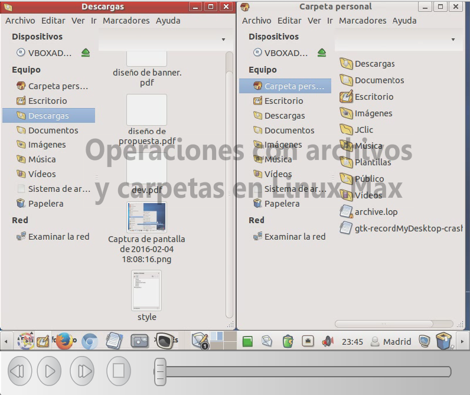
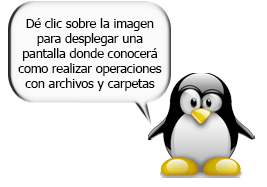
Archivos de medios extraíbles
Linux Max dispone de 2 tipos de cuentas de usuario:
- Administrador: Tiene el control total sobre el Sistema Operativos y los programas instalados.
- Estándar: Es la cuenta de usuario con pocos privilegios, normalmente solo puede guardar sus documentos y usar programas instalados.
Archivos de medios extraíbles
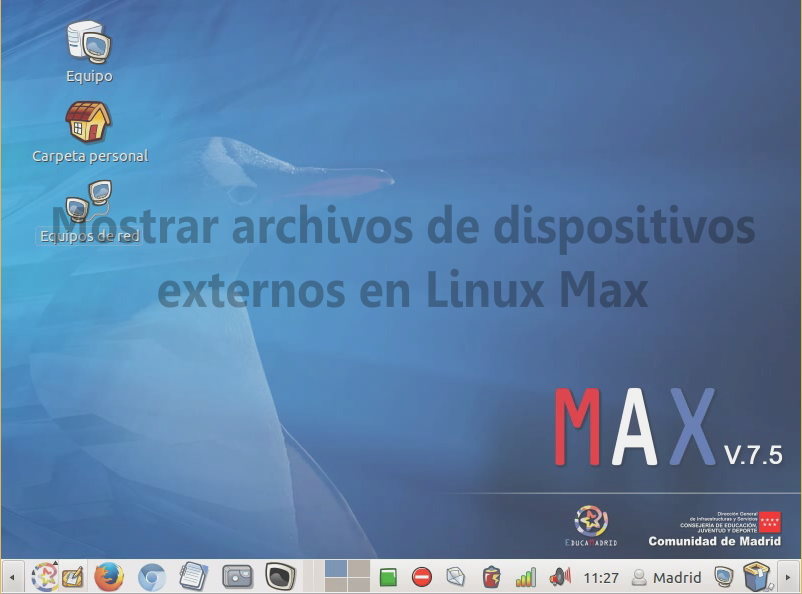
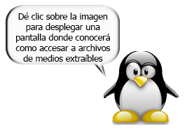

Establecer una conexión
Conexión a Internet es el sistema de enlace con que el computador, dispositivo móvil o red de computadoras cuenta para conectarse a Internet, lo que les permite visualizar las páginas web desde un navegador y acceder a otros servicios que ofrece Internet.
Establecer una conexión


Abrir navegador web
Linux Max por defecto cuenta con dos navegadores web que permiten navegar al usuario por la internet. Estos navegadores son Chromium y Mozilla Firefox.
- Clic en Menú Principal.
- Clic en opción Internet.
- Clic en Navegador web Chromium ó Mozilla Firefox.
Abrir navegador web
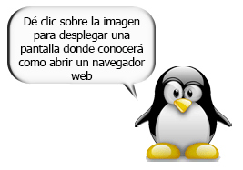

Historial de navegación
En la página Historial, se muestran los sitios web que visitaste durante los últimos 6 meses. Sin embargo, no se guardan páginas que visitaste en el modo de navegación de incógnito ni páginas que ya borraste del historial de navegación.
Historial de navegación


Editor Malted
El Editor de Escenas es el que se usa para crear las actividades individuales. En su área de trabajo se decide que tipos de actividades se desea realizar y se disponen los elementos multimedia. El Editor de Unidades es el que permite unir varias actividades en una secuencia didáctica más amplia.
Editor Malted
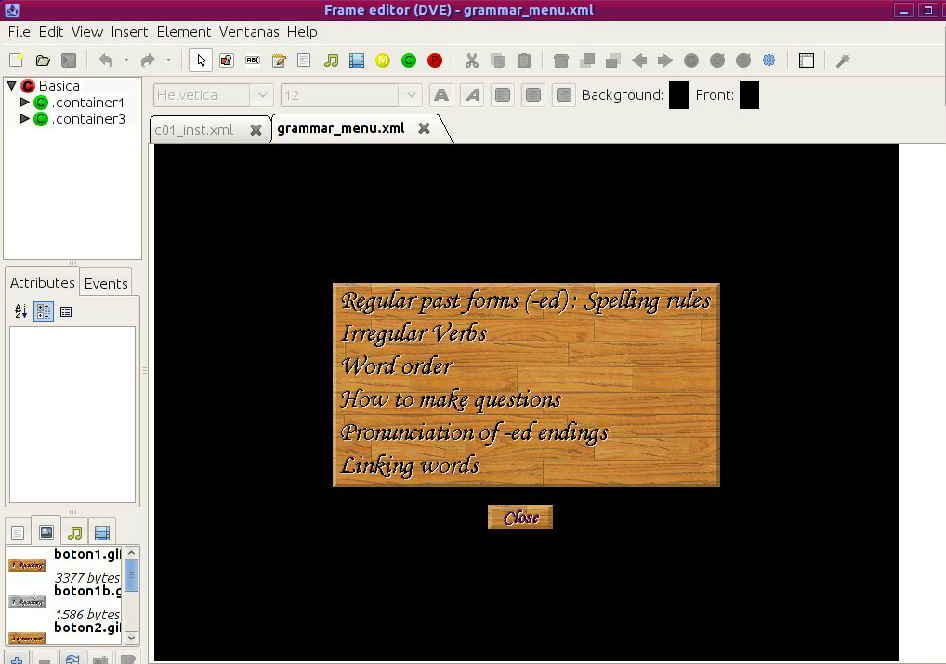
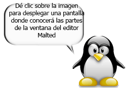
Navegador Malted
El entorno gráfico o visor multimedia propio del sistema, en la actualidad se instala automáticamente en el equipo como parte de un proceso transparente para el usuario cuando se descarga e instala en local la primera unidad didáctica. También que el mismo forma parte de la instalación del sistema que se ejecuta desde la página Instalación de la web de Malted.
Navegador Malted
Jclic Author
JClic es un entorno para la creación, realización y evaluación de actividades educativas multimedia, desarrollado en la plataforma Java. Es una aplicación de software libre basada en estándares abiertos que funciona en diversos entornos operativos: Linux, Mac OS X, Windows y Solaris
Jclic Author
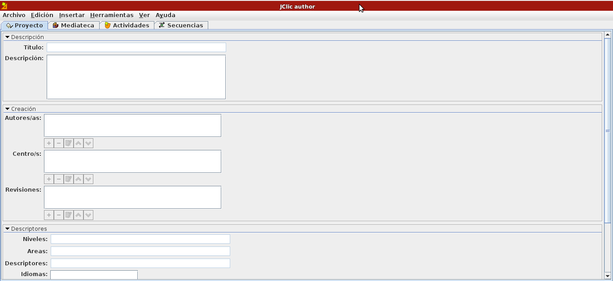
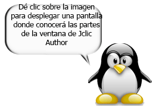
Descarga de actividades
- Biblioteca de actividades: Está formada por centenares de aplicaciones.
- JClic: Es un conjunto de aplicaciones para multimedia de software libre con licencia GNU GPL
- Clic 3.0: El programa original, antecesor de JClic, fue creado para Windows 3.1
- Comunidad: Un espacio para el diálogo, la comunicación, el intercambio y la cooperación entre desarrolladores.
- Documentos: Todo tipo de documentos sobre Clic y JClic
- Soporte: Aquí encontrará las preguntas más frecuentes sobre el proyecto Clic y sus programas.
- Herramientas: En este apartado hay una recopilación de herramientas libres y shareware utiles.
Descarga de actividades
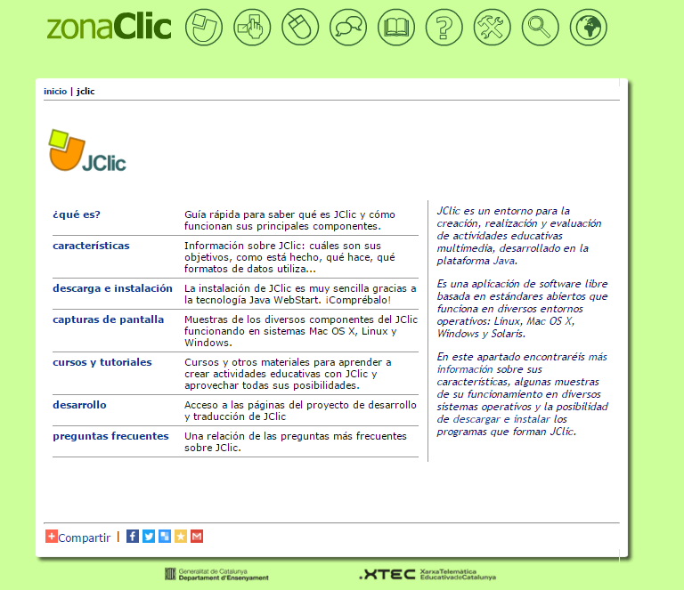
Resumen de Linux Max
- Clic en Configuración de sistema
- Clic en Detalles
- Visión general
- Aplicaciones predeterminadas
- Soportes extraibles
- Graficos
- Cambiar configuración de sistema
Resumen de Linux Max
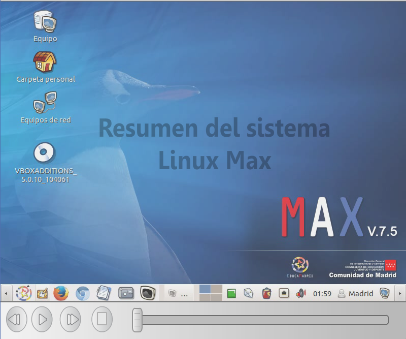
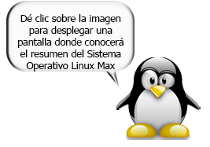
Descargando Linux Max [Instalacion/DVDLive]
- Escribir en el buscador Descargar Linux Max
- Clic en Primer Link Descargar Linux Max
- Ir a la zona de descarga y descargar el Sistema operativo 32-64 bits
Descargar Linux Max
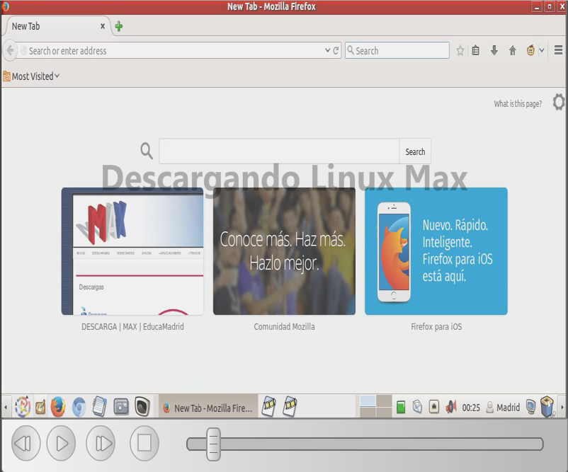
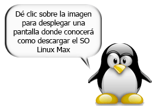
Configurar Máquina Virtual para Instalación de Linux Max
- Clic en nueva máquina virtual
- Configurar la versión de Sistema Operativo
- crear unidad de disco duro virtual
- Seleccionar tipo de archivo de Disco Duro
Configurar Maquina Virtual Para Instalación de Linux Max

Virtualizando Linux Max
- Seleccionar la unidad de virtualización
- Elegir tipo de escritorio, nombre del sistema
- Instalar
- Reiniciar la
- Desmontar la
- Iniciar Linux Max
Virtualizando Linux Max
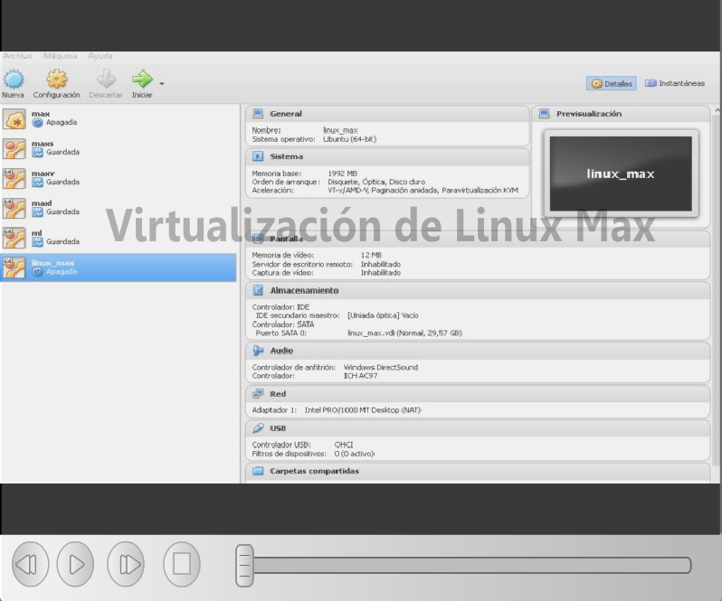
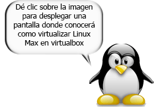
Desbloquear ventana de Gestión de Usuarios
- Clic en Cuentas de Usuario
- Clic en la Cuenta de Usuario a desbloquear
- Clic en Desbloquear
- Autenticar Administrador
Desbloquear ventana de Gestión de Usuarios
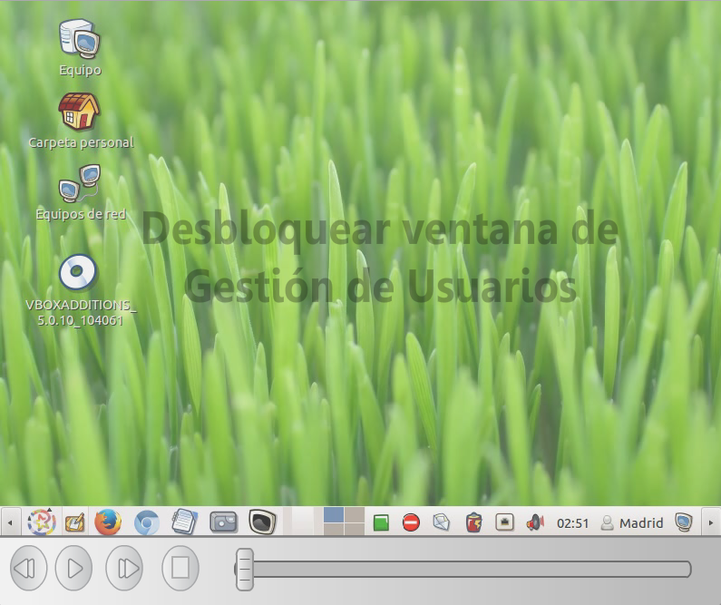
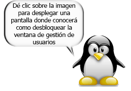
Nuevo usuario
Linux Max dispone de 2 tipos de cuentas de usuario:
- Administrador: Tiene el control total sobre el Sistema Operativos y los programas instalados.
- Estándar: Es la cuenta de usuario con pocos privilegios, normalmente solo puede guardar sus documentos y usar programas instalados.
Nuevo usuario
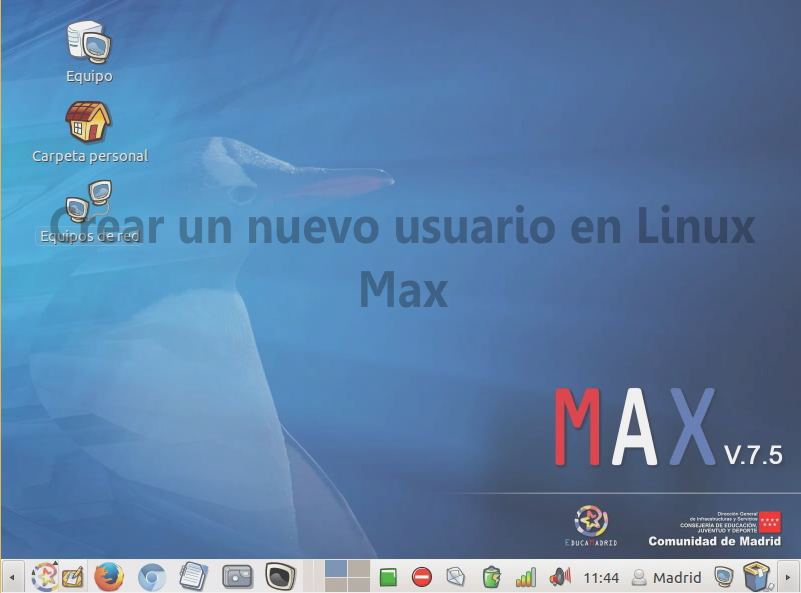
Resolución de pantalla
La resolución de pantalla hace referencia a la claridad del texto y las imágenes en la pantalla. Con resoluciones más altas, los elementos aparecen más nítidos. También aparecen más pequeños, por lo que caben más en la pantalla. Con resoluciones más bajas, caben menos elementos en la pantalla pero son más grandes y fáciles de ver.
Resolución de pantalla

Fin del Módulo de Linux Max

 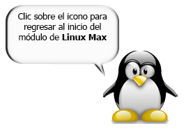
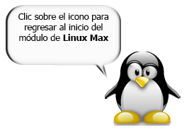